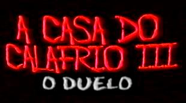
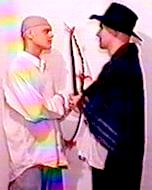
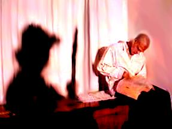
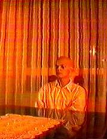
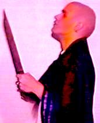
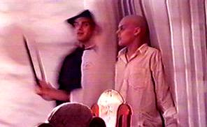
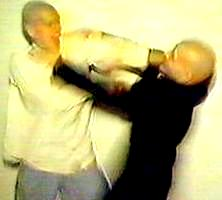

|  | "A Casa do Calafrio III - O Duelo" - com Leila Cravos (Glória Nimbas), Mário Tarântula (Bisness Nimbas) e Jezebel (Imortal Gato Sagrado do Himalaia) - direção Cristiano Balzan - 1996 - CB Produções. |
| Sinopse Após um ano de tratamento intensivo na Instituição de Saúde, Glória, desmemoriada, já está apta para retornar à sociedade, sem lembrar de nada do que lhe aconteceu no passado. É quando ela retorna à sua casa. Aos poucos, pequenos detalhes vão lhe trazendo flashes de se seu passado. Quando Glória reencontra Bisness, relembra de tudo que aconteceu, começando assim uma perseguição implacável. Glória porém está disposta a acabar com esse pesadelo: juntando todas as suas forças, ela consegue achar o colar e trazer a India Solitude para unir-se ao Imortal Gato Sagrado do Himalaia e poder lutar com Bisness. É quando se inicia um grande duelo, tenso e violento e que culmina com um final surpreendente e definitivo. Neste filme, todos os elementos apresentados nos dois filmes anteriores são fundamentais para o incrível desfecho. Quiz
|
      |